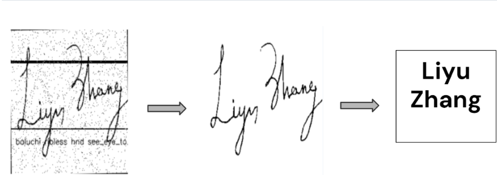
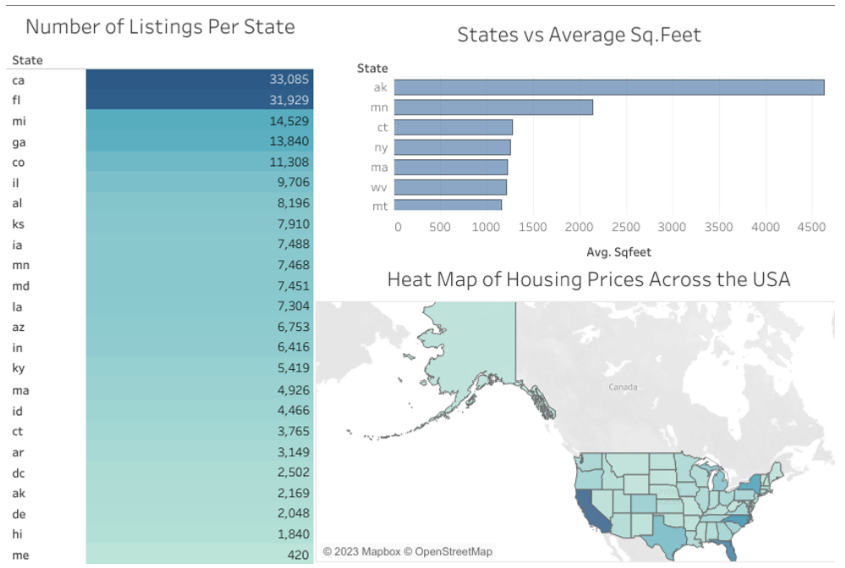

Google Play Store Analysis

Exploratory Data Analysis (EDA) in Python on the Google Play Store dataset on Kaggle. Using Pandas, Numpy, Matplotlib, and Seaborn, I was able to draw insights form the data while also pairing it with visualizations to communicate my findings.
Signature Detection & Extraction

Machine Learning and artificial intelligence project concerning the detection, extraction, and translation of signature from online documents. Used various tools like Python, TensorFlow, OpenCV, NumPy, and Pandas. Group project for ACM @ UCSD
Real Estate Database Management

Utilized SQL to query and clean various datasets from a local database. Leveraged Tableau to make engaging dashboard to draw impactful insights.